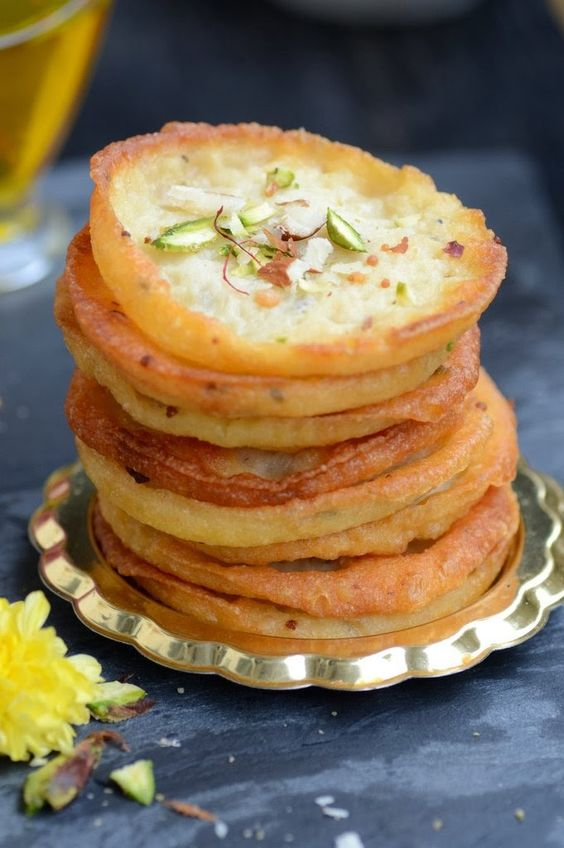

Malpua
Malpua is a traditional Indian sweet from Rajasthan which is basically a fried pancake dunked in sugar syrup.

Ingredients
- 1 and 1/2 cup Milk Warm
- 1/2 cup Khoya Grated
- 1 cup Maida
- 1 tsp Saunf Coarsely Ground
- 2 tsp Sugar
- 1 pinch Salt
- 1 pinch Baking Powder
- Ghee for frying
- Almonds
- Pistachios
- Saffron
For Sugar Syrup:
- 1 cup Sugar
- 1/4 cup Water
- 2-3 Cardamom Ground
- 8-10 strands Saffron
Method
- Add sugar, cardamom, saffron and water in a pan.
- Cook till the syrup is of one string consistency. Keep aside
- Mix half of the warm milk and khoya in a bowl.
- Mix till khoya is combined.
- Add half of the maida and mix to make a smooth paste.
- Add the remaining maida and make a smooth paste.
- Now add sugar, saunf, salt and baking powder. Mix well.
- Add the remaining milk and mix well.
- Keep aside for 10 minutes.
- Heat ghee in a shallow pan.
- Mix the batter and pour a small ladle full ( approx 2 tbsp ) in the hot ghee. ( The ghee should not be too hot )
- Simmer the heat to low and fry the malpua on both the sides till golden brown.
- Remove from ghee and dip in the sugar syrup for 2 minutes.
- Serve hot as such or with kesar rabdi.